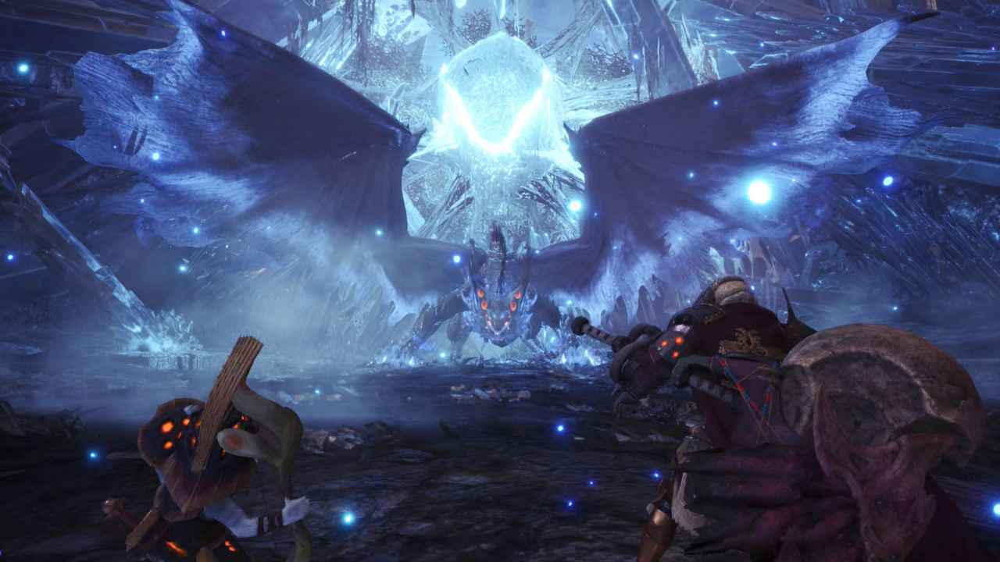
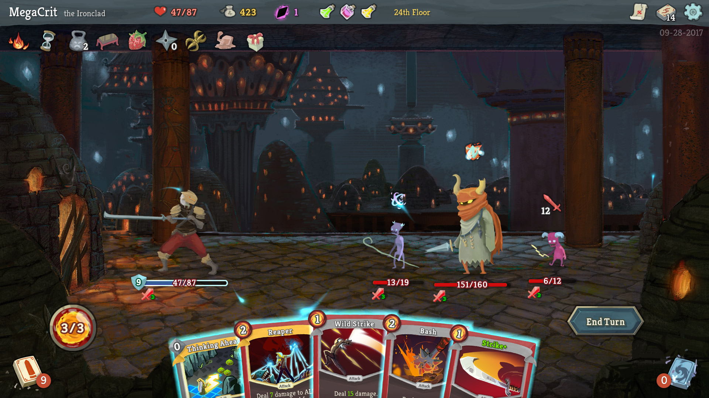
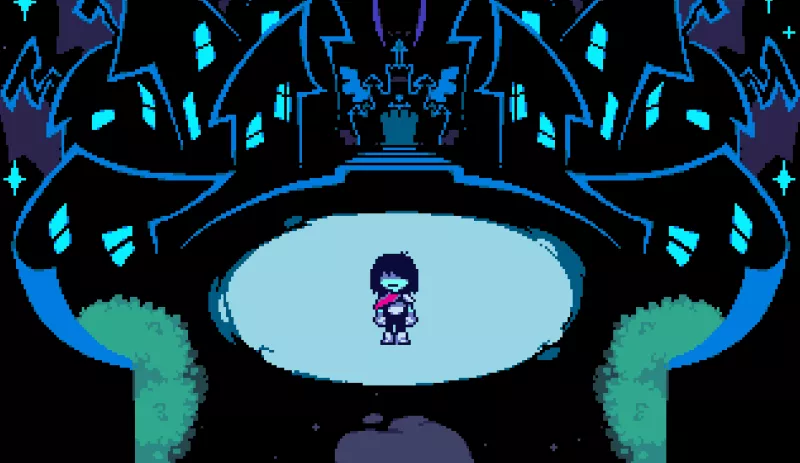
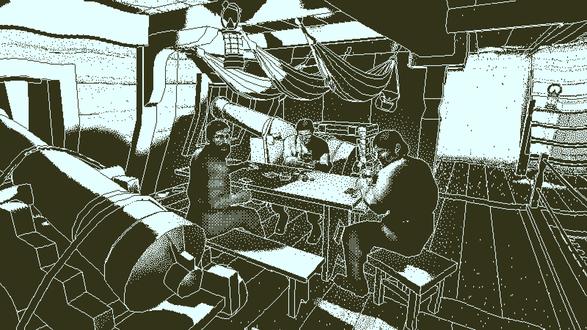
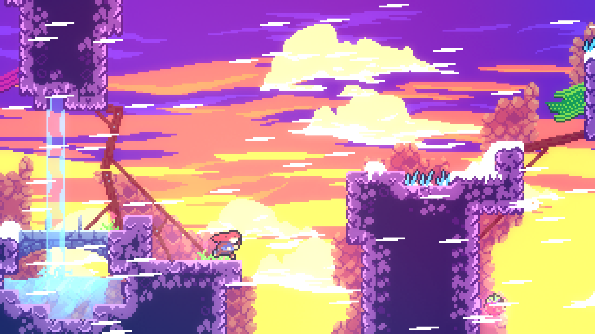
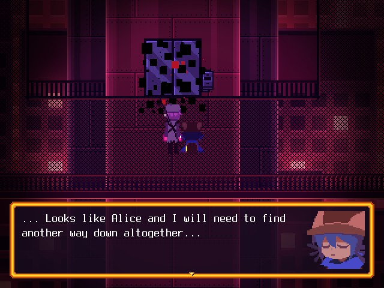
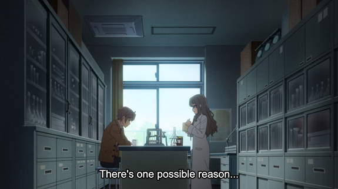
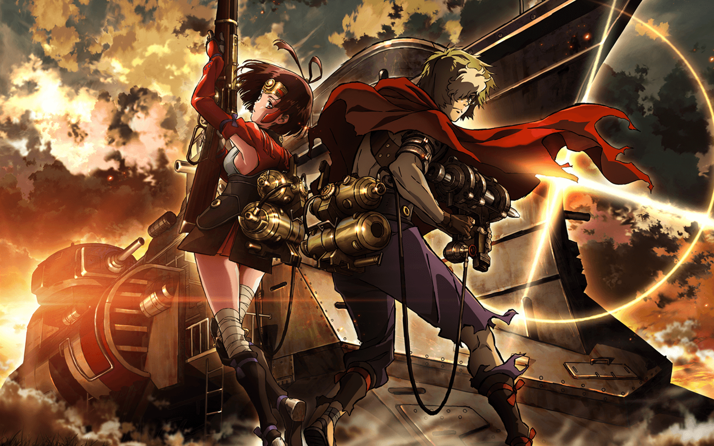

My Favorite Things 2018
2018 was a weird year for media I enjoy with some mediums like video games and youtube producing some of my favorite content in years while anime and music were fairly barren in terms of new content coming out that I enjoyed.
Below is a list of my favorite things that either came out this year or that I experienced this year that I feel worth calling out. This doesn’t include everything but just what I found most important in defining this year for me.
Video Games

Monster Hunter World was the first Monster Hunter game I’ve ever played, though I hold the opinion that the hunting action subgenre’s take on action games is what inspired the gameplay behind the Souls Series and why I characterize the games as a hunting action game. So in sense I have played a Monster Hunter game before. Playing this game in a full party with my friends was one of the funnest experiences of 2018 and specifically taking on the Elder Dragons was particularly challenging and rewarding. The game design philosophies behind this game have influenced my own considerably particularly the tracking mechanics, boss fight designs, and the excellent world/character design that the game has. Even though I haven’t picked up the game since blitzing through it over the course of the week, the whole game still remains clear in my mind and the new expansion Iceborne has me excited to buy the game a second time on PC and play through it all again.
Slay the Spire has clearly influenced me quite a bit being one of the major influences behind my game Rainfall but leaving at just that isn’t enough. This game reinvigorated my love for card games and specifically deck-building games after I’d grown bored of the Hearthstone space. Slay the Spire is one of the only games I’ve bought in early access because the game was just that good, I couldn’t wait to play it. The modding community for the game has been incredible too and I’ve but close to 100 hours into the game this year and will easily play 100s more in the years to come. This is probably the game I’ve played the most or tied with MHW. I find the game to be a masterclass in both card game design and in roguelite design. I haven’t been captivated by a roguelite like this since Binding of Isaac which I similarly put in 200+ hours.
How do you follow up Undertale? I think anyone that played Undertale would feel that, there’s no way to temper your expectations to a reasonable level after playing through something that was easily a 10/10 for me. So when I heard Toby Fox released Deltarune I was excited and worried that I’d just be dissapointed by playing a lesser Undertale or worse and Undertale 2. It turns out this was one of those rare instances where the follow up to a 10/10 was almost as good. While not a complete game and more of a part 1 in a saga, Deltarune expanded upon the combat mechanics of Undertale and presented a more interesting combat system than Undertale by providing party mechanics, various ACTs, Overworld Combat Mechanics, and the ominous warning that ‘Your choices do not matter’. If Undertale was a game about choice being all that matters this was the opposite. The same could be said of Deltarune in general. This game uses the mold of Undertale but besides that this game is its own entity divorced from Undertale in any meaningful way. While not as impactful to me nor as good as Undertale was, I’m excited to play whatever Toby Fox releases from here on out.
I’ve always held the belief that mystery is a genre that doesn’t work in video game format outside of visual novels. Most games, like movies and other mediums, tend to label something as a mystery but it is usually more of a thriller with hints of mystery than the full blown genre itself. To be a mystery to me, requires it to be reasonably solvable by the person experiencing the medium. Due to Umineko’s influence on me, I also vastly prefer it to follow Father Knox’s Decalogue that outlines the rules a mystery must follow. With this in mind, Return of the Obra Dinn has shattered that expectation. This is the only mystery game that exists for me. Being that mystery is one of my favorite genres it’s no wonder I loved this game. Its aesthetic, narrative, and crime scene vignettes were some of the most interesting takes on the genre I’ve seen. While I did feel that a couple of the crew’s identities and deaths required a bit too much inductive reasoning and that the artstyle sometimes caused some of the particle effects to be hard to read, this game was incredible. I look forward to the clone’s of this game that are likely to appear in the next few years and hope they can take the foundation laid out here and improve upon it. A couple of iterations on this game’s concept could easily create a game that would be one of my favorite things ever.
2018 featured my return to World of Warcraft for the first time since Legion’s launch to play through the end of the expansion and reinvigorate my passion for the game. There’s so much I could talk about that Legion did well but the Mage Tower has to be the definitive experience I had to end the expansion. Trying to quickly gear and master my Warlock that I had played for over a decade so I could beat each of my spec’s challenge was the most fun I had since clearing hard modes in Wrath of the Lich King and was the most fun I had ever had playing solo in that game. I played for several months before Battle For Azeroth and several months during BFA which was my longest period of playing WoW since the Wrath of the Lich King days. While playing through BFA with friends and clearing the Mythics and Arenas was fun, BFA lacked the content I was hoping to see especially after doing the Mage Tower and I have since unsubbed from WoW again awaiting the next Mage Tower.
Celeste is a game I didn’t play myself but watched Joseph Anderson play on his twitch channel. Matt Thorson has been one of my game design idols since he released An Untitled Story which is still one of my favorite games and metroidvanias. Without playing this game I can tell that the game controls fluidly and contains some of the best platforming I’ve seen in games. The characters in the game are all on point and the humor had my dying at every point. The music was also a highlight for me and I can’t wait to play this myself in 2019.
Even though it came out in 2016, OneShot is a game I heard about for the first time this year. Another surreal top down RPG in the style of other RPG Maker-like adventures like Yume Nikki, Mad Father, iB, Witch’s House, etc. OneShot is charming puzzle game with some excellent color composition and world design. However, the main draw of the game is its meta elements of the game interacting with your desktop, file system, and other programs. It isn’t until the second play through and the way to access it that I fell in love with the game and the main character. Usually meta driven plots feel cheesy or come through as lampshading game mechanics but OneShot’s charm and what it tried to say gave me the same joy as a game like Undertale did when it talked about games as a meta.
Music
Music was a barren category for me this year. While quite a ton of new content came out I wasn’t captivated with it in the same way I was last year when I discovered Kendrick Lamar’s To Pimp A Butterfly, which I know consider my favorite album of all time. This year I spent most of the time listening to albums and singles I previously enjoyed and rediscovering some older music that I hadn’t listened to in a while.
However, I came across an artist named Mili this year through their song Summoning 101, then listened to Ga1ahad and Scientific Witchery, and their take on Komm susser Tod which then led me to just listen to the entire Miracle Milk album. Mili is easily the artist that I listened to the most this year especially with their new single Rightfully. I don’t think any other artists come close unless we include all of the Touhou Project remixes as being derived from the same artist. The lyrics and instrumentals on nearly all of their tracks are flawless. There is a sort of ethereal fantasy type quality to their music and each one of their songs is so distinct. On the same album they tackle multiple characters, genres, and settings some of which I’d never heard in music before. Their sound is so distinct that the first time I heard Rightfully within moments I could tell it was a Mili song.
Therefore my song of the year has to be Rightfully by Mili even though it faced no contest. There was potential for there to be quite a few really great albums too. The new Drake and Eminem albums sounded interesting but quickly passed out of my life. However, I was pleasantly surprised by Kanye West’s “Ye” Album. While I listened to Life of Pablo and had a good time with it, the songs never made it on my playlist or were something I ever listened to again. With Ye I was captivated through the entire album and while I haven’t listened to it since I’m excited for Kanye’s next solo album and how he evolves from here.
Musicals
I really have only one thing to talk about here and it is not even something that came out this year. The Dolls of New Albion is a Steampunk Opera and if that doesn’t excite you for a musical I don’t know what can.
The Musical takes place over four generations of a family in the town of New Albion starting with a girl who necromatically brings back someone she loved and ending in a Nazi like regime in a 1984-esque town gunning down dolls on sight. The eclectic nature of the town as being based in bizarre offshoot of our own reality but having technology advance at a pace more rapid than our timeline is interesting. The musical has only two singers who cover a wide range of characters and a narrator who does an excellent job of narrating how the town evolves between arcs. The actual songs themselves are rather catchy and I found myself listening to New Albion 1, Edgar Builds A Business, Priscilla And Jasper Play Cards, and The Day They Come standalone more times than I care to admit. I’ve also listened to the full musical way more than I should of too. Does it top Hamilton for me as the best musical? No, but Dolls of New Albion is bizarre, funny, sad, and somehow does it with no budget and a cast of three.
Movies
For movies, I was rather disappointed with 2018 any of the popular movies of the year like Black Panther were average at best. While I really liked Deadpool 2 and enjoyed Bohemian Rhapsody, nothing released in 2018 was impactful for me nor would come close to breaching my Top 20 Movies. There are still a few movies released this year that I haven't seen like A Quiet Place that may change this opinion but I’m doubtful.
Luckily I did have the pleasure of watching Birdman or (The Unexpected Virtue of Ignorance) and that was that impactful, genre defining, engrossing movie that I was looking for this year. Birdman was easily the best movie I watched which is strange given that the director also directed The Revenant which was one of my least favorite movies I watched this year. The camera work in Birdman was masterful and the way the movie mixed together fantasy and reality was beautiful and gave me Bakemonogatari type vibes mixed with Black Swan. The characters were all pieces of shit that I loved watching and the lead up to the climax while expected was still cathartic to experience. I think one of the signs that any piece of media is fantastic or impactful is that I can vividly recall all of the different parts of it even after nearly a year has passed. Birdman will be something I will use to compare other movies to now and the way it crafted its character arcs is something I hope to be able to emulate in Rainfall.
Youtube
While I thought that Video Games had one of its best years in a long time, it turns out that Youtube is what stole the most time from me out of all mediums which is a first for me. If we don’t count listening to music, youtube is something I’ll have on for noise usually or to watch a couple videos from my favorite Youtubers when they release but this year had me add so many more people to my subscription list which had traditionally been fairly barren. The surprise to me had to be Matthewmatosis who up until now put out videos about games I hadn’t really cared about. I found his content rather hard to get into until he released his Zachtronics series this year and more recently his Mega Microvideos and God of War Case Study. Both of these are 30 minutes well spent and are Game Design Analysis videos that don’t waste your time. They present unique viewpoints that feel distinctly Matthewmatosis and challenged my design philosophies in unique ways. While I find most analysis type channels to be useless in their content the ones that do impress me like these videos did, have a special place in my heart.
One of the newer additions to my subscription list is Yucco Miller a saxophonist that plays a diverse selection of music that has all been incredible so far. I’ve always been a fan of the Sax sound and played Clarinet in concert and symphonic bands for 7 years. Her sounds both provide me nostalgia of that time period while also for some reason being the music that I associate with the end of 2018 and the new year. Most of my days in December have started with listening to one of her songs and most of my days also end in listening to one of her songs. Her cover of Loser has also been played so many times that my neighbors could probably sing the tune by now.
Clemps is someone I’d started watching in 2016 and his analysis videos of Drakengard 1, 2, 3, and Nier were some of the main reasons why I was so excited for Nier Automata which was my second favorite game of last year behind Persona 5. This year had Clemps refine his style even more and his coverage of JRPGs has led me to crown him as the definitive source on them as someone with proclivities fairly similar to mine. His blend of humor and pacing of his videos are his strongest aspects with 30 minute and hour long videos easily feeling like they lasted for no time at all which is a rare talent to have.
Finally I’d like to call out NakeyJakey’s most recent video Rockstar’s Game Design is Outdated. While I’ve never heard of this channel before this single video got me to subscribe which rarely happens for me. His use of humor is just as good as someone like VideoGameDunkey but applied to the analysis space where you can tell that his love for video games comes out in the way he talks about Red Dead Redemption 2’s problems and how much potential he sees in the game. I’d love to see him cover more games in this format because the way he constructs his analogies and examples to support his claims are immaculate. The Lego Metaphor and Haunted House Concept are two ideas I’m going to steal for myself to talk about games going forward.
Some of my other favorite Youtubers that released great content this year include SuperBunnyHop, Kaif, Binging With Babish, Joseph Anderson, CaseyNeistat, ProZD, Lessons from the Screenplay, Nerdwriter1, Now You See It, Mikey Chen, Simon and Martina, and many others.
Anime
Anime was another disappointment for me this year if we consider only what was released as part of 2018. Up until the Fall Season, SAO: GGO Alternative or Happy Sugar Life was going to be my Anime of the Year which is a really sad thought especially when I consider these shows a mid to light 7 out of 10.
Overlord II and III were both major steps down from the first season with III being laughably bad at points. Darling in the FranXX was dropped after several episodes and the same can be said about several other shows each season.
Luckily this Fall season has been way stronger for me with Seishun Buta Yarou wa Bunny Girl Senpai no Yume wo Minai being my favorite show that came out this year now. Anyone that knows my tastes could tell that this show would be meant for me. A clear blend between OreGairu and the Monogatari Series with some Charlotte thrown in, I’ve really enjoyed my time with this series that I’m willing to call it my Anime of the Year however, while it does many things well it doesn’t excel in any of them. This show is a solid 8 out of 10 no contest and the writing is quite good but some wonky animations in each episode and the relative shortness of some arcs play to its detriment. The series starts off with its Senjougahara replacement’s arc that does its initial arc better than Bakemonogatari. It then follows it up with Koga’s arc who replaces Nadeko in this series and again does its arc way better being my favorite arc in the series. Futaba’s arc while interesting and presenting a couple unique plot hooks but doesn’t do anything with them which was unfortunate given how it provided a really cool “charisma break” for the series Oshino Meme. The series last two arcs though are fairly terrible. Mai’s sister’s arc wasn’t worth the screentime and if this time was split between Kaede’s and Futaba’s arcs may of made the series a 9 or 10 out of 10 for me even with its other problems. Unfortunately while I like the story beats of Kaede’s arc and several of the emotional climaxes impacted me too I can’t help but look back on the arc and imagine what could of been.
Instead the best show I watched this year was Koutetsujou no Kabaneri. Besides its aesthetic of Post-apocalyptic Dieselpunk mixed with samurais, which already sold me on the show the main character is impeccable. Ikoma has a fantastic character arc and reminds me of Houseki no Kuni’s Phos’s character arc in a way. Both characters trying to better themselves through self-sacrifice so that they can protect others and both the positive and negative emotions that erupt from that is one of the main reasons why I watched their shows. Kabaneri is also just a beautiful show that goes on for just the right length of time. I’d call Kabaneri the definitive Light 8 show.